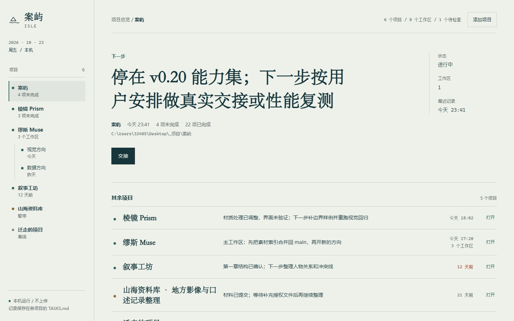
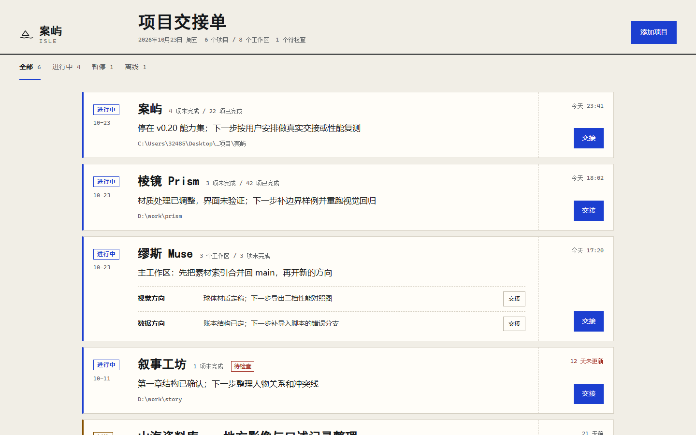
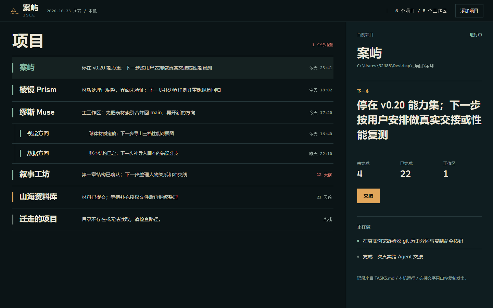

方向 A
海图
左侧项目索引，右侧把“下一步”排成版面主角。安静、编辑感，像在图上标出下一段航程。
打开单文件小样01-chart.html

方向 B
交接单
每个项目是一张横向待签的交接单：左侧盖章，中间写下一步，右侧放交接动作。直接对应产品里“交出去”的动作。
打开单文件小样02-slip.html

方向 C
夜航
左侧项目流，右侧常驻当前项目。像夜间值班的驾驶舱：只放大当前要接的那一段，其余压成清晰的列表。
打开单文件小样03-nightwatch.html